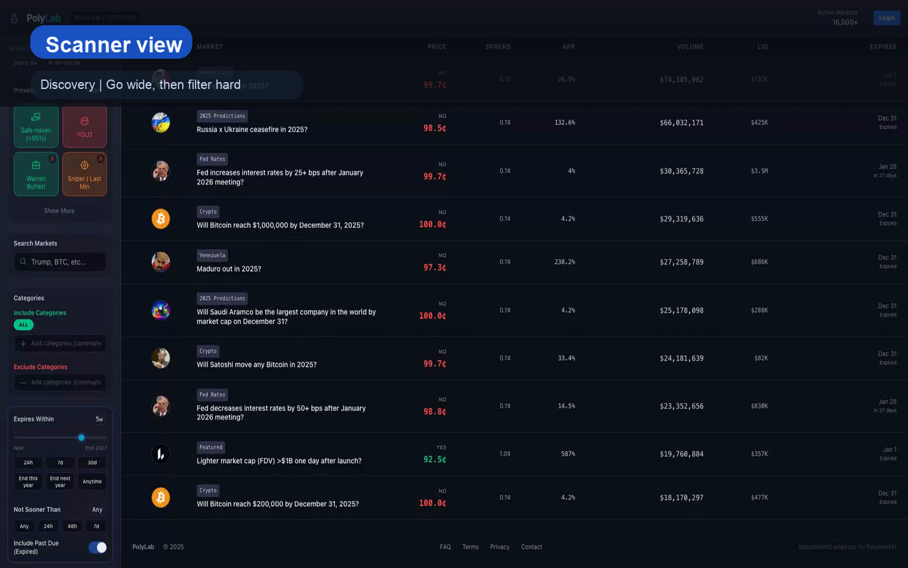
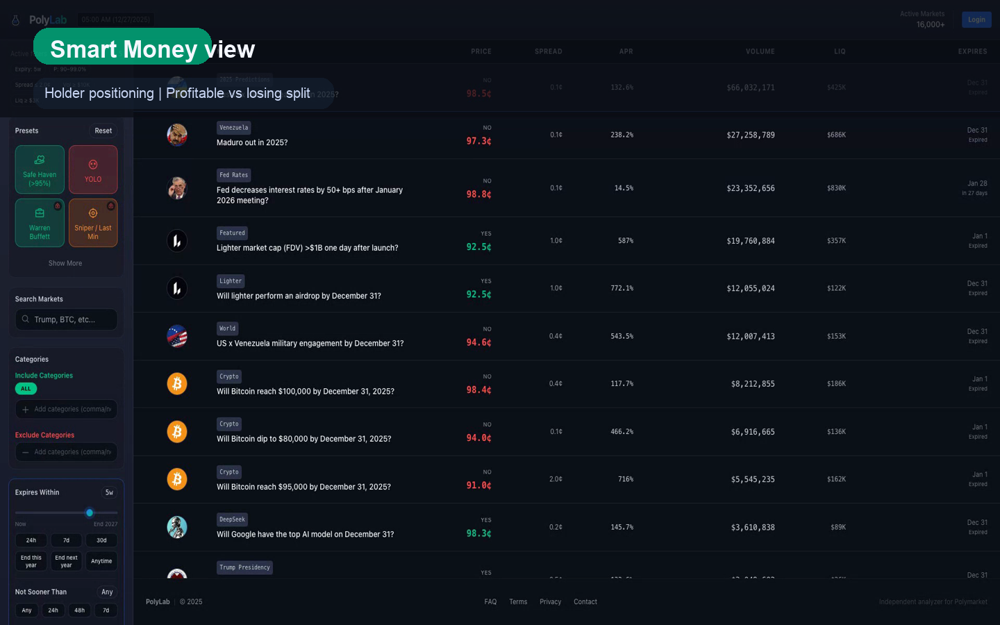

PolyLab scanner
Find better Polymarket trades before the crowd
Scan price, spread, APR, liquidity and event context in one fast research workflow.
16,000+ active markets
Fast filters
Scanner-first UX

Scan price, spread, APR, liquidity and event context in one fast research workflow.
Built for serious market scanning with transparent metrics, fast filters and direct visibility into market structure.

Track top holders, compare yes vs no conviction and spot where smart money diverges from the market.
A sharper angle for X: less “analytics platform”, more “we know where good wallets are leaning”.
A cleaner, more brand-led direction for periods when you want the account to feel sharper and less like a product screenshot.